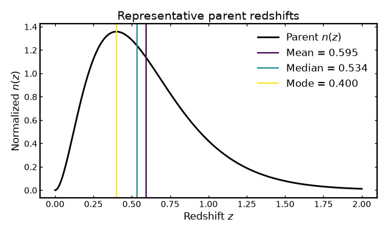
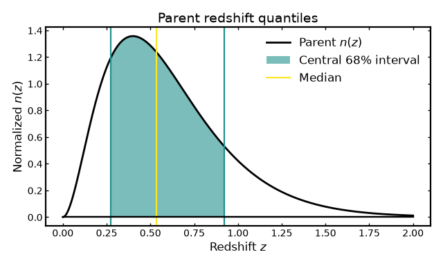
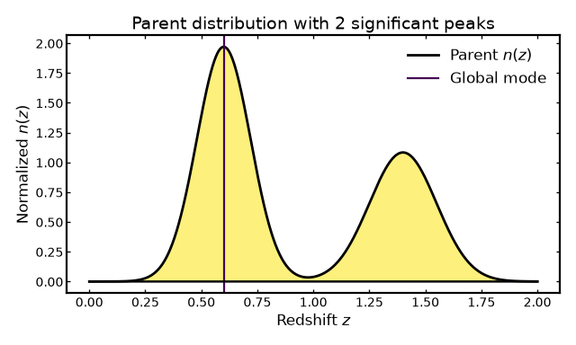

Parent distribution statistics#
Parent distribution statistics#
Before constructing tomographic bins, it is useful to characterize the underlying parent redshift distribution, \(n(z)\).
The parent distribution describes the redshift dependence of the full galaxy sample before it is divided into tomographic bins. Its statistical properties determine the characteristic redshift range, width, asymmetry, and possible multimodality of the sample.
Binny provides parent distribution statistics through
binny.NZTomography, including:
moments, such as the mean, median, mode, standard deviation, skewness, and kurtosis,
quantiles, which characterize the cumulative distribution and its central redshift intervals,
peak diagnostics, which identify the dominant peak and possible secondary structure.
These statistics are computed directly from the parent \(n(z)\), independently of the tomographic bins.
The examples below demonstrate how to calculate and visualize these quantities using a representative parent redshift distribution.
All plotting examples below are executable via .. plot::.
The plotting code is hidden by default and can be inspected using
the Source code button.
Building a parent redshift distribution#
We begin with a smooth parent redshift distribution using the Smail parameterization.
This model provides a simple representation of the redshift dependence of a galaxy sample and is commonly used in cosmological forecasts.
For this example, we construct the parent distribution and pass it to Binny using predefined tomography.
The predefined bins are used only to initialize the tomography object. The parent statistics are evaluated directly from the supplied distribution rather than reconstructed from those bins.
import numpy as np
from binny import NZTomography
z = np.linspace(0.0, 2.0, 1000)
nz = NZTomography.nz_model(
"smail",
z,
z0=0.2,
alpha=2.0,
beta=1.0,
normalize=True,
)
tomography = NZTomography()
result = tomography.build_predefined_bins(
z=z,
nz=nz,
bins={0: nz},
)
stats = tomography.parent_stats(decimal_places=4)
print(stats)
Accessing parent statistics#
The binny.NZTomography.parent_stats() method returns a dictionary
containing three groups of statistics:
moments: central tendency, dispersion, and higher-order moments,quantiles: redshift values corresponding to requested cumulative probabilities,peaks: information about the dominant peak and secondary maxima.
For example, the mean, median, mode, and standard deviation can be accessed directly from the returned dictionary.
stats = tomography.parent_stats(decimal_places=4)
moments = stats["moments"]
print("Mean:", moments["mean"])
print("Median:", moments["median"])
print("Mode:", moments["mode"])
print("Standard deviation:", moments["std"])
print("Skewness:", moments["skewness"])
print("Excess kurtosis:", moments["kurtosis"])
print("Quantiles:", stats["quantiles"])
print("Peaks:", stats["peaks"])
The same statistics are also available through the returned
binny.nz_tomo._tomography_bins.TomographyBins object.
stats = result.parent_stats(decimal_places=4)
Both interfaces operate on the same stored parent distribution and therefore return identical statistics when called with the same arguments.
Visualizing the mean, median, and mode#
The mean, median, and mode provide three complementary descriptions of the characteristic redshift of a galaxy sample.
The mean is the expectation value of redshift under the normalized parent distribution. The median divides the integrated distribution into two equal parts, while the mode identifies the redshift at which the distribution reaches its maximum.
For a symmetric, unimodal distribution, these quantities generally coincide. For asymmetric distributions, they can differ substantially.
This distinction is useful in cosmological analyses because a single representative redshift does not necessarily capture the full shape of the underlying galaxy population.
(Source code, png, hires.png, pdf)



Quantiles and central redshift intervals#
Quantiles describe how the integrated probability of the parent distribution is distributed across redshift.
For example, the 16th, 50th, and 84th percentiles provide a convenient summary of the central part of the distribution.
The interval between the 16th and 84th percentiles contains approximately 68% of the integrated distribution.
Unlike the standard deviation, quantile-based intervals do not require the distribution to be Gaussian. They therefore remain useful when the parent distribution is asymmetric or contains extended tails.
Binny allows arbitrary quantiles to be requested using the
quantiles argument.
stats = tomography.parent_stats(
quantiles=(0.05, 0.16, 0.50, 0.84, 0.95),
decimal_places=4,
)
print(stats["quantiles"])
print(stats["moments"]["width_68"])
The following figure illustrates the central 68% interval of the parent distribution.
(Source code, png, hires.png, pdf)



Identifying multiple peaks#
A parent redshift distribution does not necessarily contain a single dominant population.
Multiple peaks can arise when combining galaxy samples with different selection functions or redshift distributions.
Such structure can affect the interpretation of representative redshifts and may influence the properties of subsequently constructed tomographic bins.
Binny provides peak diagnostics through the peaks entry of
parent_stats().
The returned quantities include:
mode: redshift of the global maximum,mode_height: height of the distribution at the global maximum,num_peaks: number of significant local maxima,second_peak_ratio: relative height of the second-highest peak compared with the highest detected peak.
The min_rel_height argument controls the minimum peak height
relative to the global maximum.
The following example uses a synthetic bimodal parent distribution.
(Source code, png, hires.png, pdf)



The number of detected peaks depends on the chosen relative-height threshold and the resolution of the redshift grid.
Peak diagnostics should therefore be interpreted as descriptive summaries rather than definitive evidence for physically distinct galaxy populations.
Parent statistics and tomographic binning#
An important distinction is that parent statistics characterize the full redshift distribution, whereas shape statistics characterize individual tomographic bins.
The parent distribution may be supplied independently of the bin curves. In particular, externally supplied bins may be normalized separately, so summing their curves does not necessarily reconstruct the original parent distribution.
For this reason, parent_stats() always evaluates the stored
parent \(n(z)\) directly.
The following example illustrates this distinction.
import numpy as np
from binny import NZTomography
z = np.linspace(0.0, 2.0, 1000)
parent = np.exp(-0.5 * ((z - 1.2) / 0.3) ** 2)
bins = {
0: np.exp(-0.5 * ((z - 0.5) / 0.1) ** 2),
1: np.exp(-0.5 * ((z - 1.0) / 0.1) ** 2),
}
tomography = NZTomography()
result = tomography.build_predefined_bins(
z=z,
nz=parent,
bins=bins,
normalize_bins=True,
)
parent_statistics = result.parent_stats(decimal_places=4)
bin_statistics = result.shape_stats(decimal_places=4)
print("Parent mean:", parent_statistics["moments"]["mean"])
for key, entry in bin_statistics["per_bin"].items():
print(f"Bin {key} mean:", entry["moments"]["mean"])
The parent mean is determined by the supplied parent distribution, regardless of how the individual bins are normalized or where their peaks are located.
This separation is particularly useful when working with externally supplied tomography, survey data products, or independently calibrated redshift distributions.
Notes#
Parent statistics are computed directly from the stored parent \(n(z)\), independently of the tomographic bins.
The distribution does not need to be normalized because the moment and quantile calculations account for its total weight.
Multiplying the parent distribution by a positive constant leaves its normalized shape statistics unchanged, although the reported
mode_heightchanges.The mean, median, and mode describe different properties and need not coincide for asymmetric distributions.
Quantile-based intervals remain useful for non-Gaussian distributions.
Peak diagnostics depend on the relative-height threshold and redshift-grid resolution.
Both
binny.NZTomography.parent_stats()andTomographyBins.parent_stats()expose the same statistics.